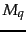
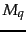
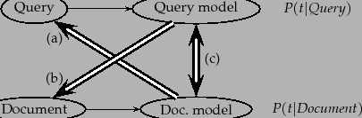
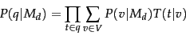

In this section we briefly mention some of the work that extends the basic language modeling approach.
There are other ways to think of using the language modeling idea in IR settings, and many of them have been tried in subsequent work. Rather than looking at the probability of a document language model  generating the query, you can look at the probability of a query language model  generating the document. The main reason that doing things in this direction and creating a document likelihood model is less appealing is that there is much less text available to estimate a language model based on the query text, and so the model will be worse estimated, and will have to depend more on being smoothed with some other language model. On the other hand, it is easy to see how to incorporate relevance feedback into such a model: you can expand the query with terms taken from relevant documents in the usual way and hence update the language model (Zhai and Lafferty, 2001a). Indeed, with appropriate modeling choices, this approach leads to the BIM model of Chapter 11 . The relevance model of Lavrenko and Croft (2001) is an instance of a document likelihood model, which incorporates pseudo-relevance feedback into a language modeling approach. It achieves very strong empirical results.
generating the query, you can look at the probability of a query language model  generating the document. The main reason that doing things in this direction and creating a document likelihood model is less appealing is that there is much less text available to estimate a language model based on the query text, and so the model will be worse estimated, and will have to depend more on being smoothed with some other language model. On the other hand, it is easy to see how to incorporate relevance feedback into such a model: you can expand the query with terms taken from relevant documents in the usual way and hence update the language model (Zhai and Lafferty, 2001a). Indeed, with appropriate modeling choices, this approach leads to the BIM model of Chapter 11 . The relevance model of Lavrenko and Croft (2001) is an instance of a document likelihood model, which incorporates pseudo-relevance feedback into a language modeling approach. It achieves very strong empirical results.
|  |
Rather than directly generating in either direction, we can make a language model from both the document and query, and then ask how different these two language models are from each other. Lafferty and Zhai (2001) lay out these three ways of thinking about the problem, which we show in Figure 12.5 , and develop a general risk minimization approach for document retrieval. For instance, one way to model the risk of returning a document  as relevant to a query
as relevant to a query  is to use the Kullback-Leibler (KL) divergence between their respective language models:
is to use the Kullback-Leibler (KL) divergence between their respective language models:
 |
(109) |
Basic LMs do not address issues of alternate expression, that is, synonymy, or any deviation in use of language between queries and documents. Berger and Lafferty (1999) introduce translation models to bridge this query-document gap. A translation model lets you generate query words not in a document by translation to alternate terms with similar meaning. This also provides a basis for performing cross-language IR. We assume that the translation model can be represented by a conditional probability distribution
between vocabulary terms. The form of the translation query generation model is then:
|  | (110) |
Building extended LM approaches remains an active area of research. In general, translation models, relevance feedback models, and model comparison approaches have all been demonstrated to improve performance over the basic query likelihood LM.